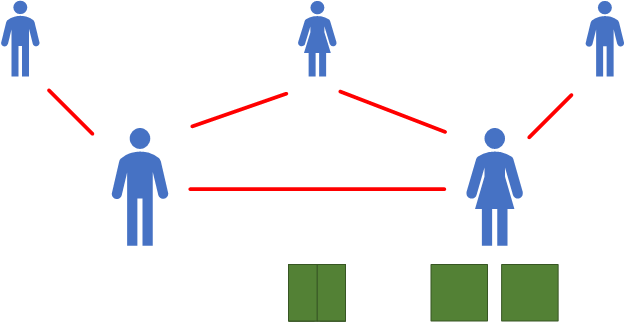
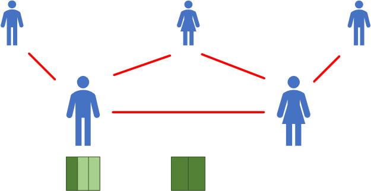
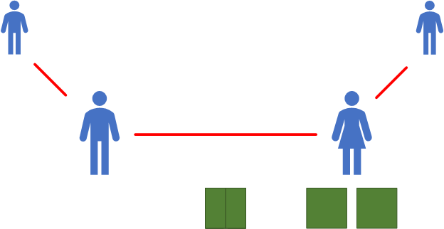
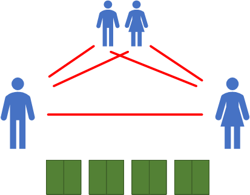

Wysokie ceny najmu i kupna nieruchomości mieszkalnych w Polsce są problemem wielu Polek i Polaków. Dzięki różnym inicjatywom (w tym licznym oddolnym) m.in. uwolnieniu Rejestru Cen Nieruchomości walka ze sztucznie zawyżanymi cenami nieruchomości mieszkalnych trwa. W debacie publicznej coraz częściej pojawia się temat podatku katastralnego lub podatku antyspekulacyjnego. Debacie tej często towarzyszą emocje i uzasadnione obawy, np. czy podatek ten nie spowoduje jeszcze wyższych cen mieszkań i najmów, a w rezultacie przeniesienia ich na najemców. Jednym z najważniejszych pytań w tym kontekście jest: w jaki sposób należy liczyć taką opłatę? Niniejszy Manifest ma być odpowiedzią na to pytanie.
Manifest ten będzie modyfikowany i uaktualniany w kolejnych wersjach.
Obliczanie opłaty odbywa się w dwóch krokach:
Współczynniki:
N - współczynnik nieruchomości
Suma wszystkich nieruchomości analizowanej osoby. W przypadku bycia jedynym właścicielem danej nieruchomości suma jest powiększana o 1. W przypadku bycia współwłaścicielem - proporcjonalnie do posiadanego udziału (współwłasność w wymiarze 1/3 nieruchomości oznacza powiększenie parametru N o 1/3). Każda nieruchomość do jakiej przysługuje analizowanej osobie prawo własności zwiększa współczynnik N. Przy wyliczaniu tego współczynnika nie jest brana pod uwagę wartość nieruchomości.R - współczynnik rodziny
Początkowa wartość tego współczynnika wynosi zawsze 1. Związek formalny z drugą osobą podnosi R o 1/2. Każde posiadane prawo do świadczenie 800+ zwiększa R o 1/2.P - współczynnik opłaty
Obliczany ze wzoru: P = N - R. Opłata występuje tylko w przypadku, w którym P > 0.W - proporcjonalność opłaty
Obliczana ze wzoru: W = P / N. Określa od jakiego procentu wszystkich nieruchomości należna jest opłata.Przykład 1:
Ludzik: nie jest w związku formalnym, nie ma dzieci. Jest jedynym właścicielem jednego mieszkania.
N = 1
R = 1
P = 1 - 1 = 0 - opłata nie jest wymagana (P ≯ 0)
Przykład 2:
Ludzik: nie jest w związku formalnym, nie ma dzieci. Jest jedynym właścicielem dwóch mieszkań.
N = 1 + 1 = 2
R = 1
P = 2 - 1 = 1 - opłata jest wymagana (P > 0)
W = 1 / 2 = 0,5
Jedno mieszkanie jest w Mielnie (gmina pobierająca opłatę miejscową), ma 48 m², drugie mieszkanie jest w Radomiu (miejscowość do 250 tys. mieszkańców), ma 62 m².
Wysokość opłaty = (48 * E + 62 * C) * 0,5
Przykład 3:

Ludzik: jest w związku formalnym, z obecną żoną ma dziecko, ma także dziecko z poprzedniego związku. Do obu dzieci przysługuje mu prawo do świadczenia 800+. Wraz z obecną żoną jest współwłaścicielem domu, ma 50% udziału.
N = 0,5
R = 1 + 0,5 + 0,5 + 0,5 = 2,5
P = 0,5 - 2,5 = -2 - opłata nie jest wymagana (P ≯ 0)
Ludziczka: jest w związku formalnym, z obecnym mężem ma dziecko, ma także dziecko z poprzedniego związku. Do obu dzieci przysługuje jej prawo do świadczenia 800+. Wraz z obecnym mężem jest współwłaścicielką domu, ma 50% udziału. Dodatkowo ma też dwa mieszkania, których jest jedyną właścicielką.
N = 0,5 + 1 + 1 = 2,5
R = 1 + 0,5 + 0,5 + 0,5 = 2,5
P = 2,5 - 2,5 = 0 - opłata nie jest wymagana (P ≯ 0)
Przykład 4:

Ludzik: jest w związku formalnym, z obecną żoną ma dziecko, ma także dziecko z poprzedniego związku. Do obu dzieci przysługuje mu prawo do świadczenia 800+. Wraz z obecną żoną jest współwłaścicielem domu, ma 50% udziału. Dodatkowo ma 1/3 udziału w innym mieszkaniu.
N = 0,5 + 0,33 = 0,83
R = 1 + 0,5 + 0,5 + 0,5 = 2,5
P = 0,83 - 2,5 = -1,67 - opłata nie jest wymagana (P ≯ 0)
Ludziczka: jest w związku formalnym, z obecnym mężem ma dziecko, ma także dziecko z poprzedniego związku. Do obu dzieci przysługuje jej prawo do świadczenia 800+. Wraz z obecnym mężem jest współwłaścicielką domu, ma 50% udziału.
N = 0,5
R = 1 + 0,5 + 0,5 + 0,5 = 2,5
P = 0,5 - 2,5 = -2 - opłata nie jest wymagana (P ≯ 0)
Przykład 5:

Ludzik: jest w związku formalnym, ma dziecko z poprzedniego związku, do którego przysługuje mu prawo do świadczenia 800+. Wraz z obecną żoną jest współwłaścicielem domu, ma 50% udziału.
N = 0,5
R = 1 + 0,5 + 0,5 = 2
P = 0,5 - 2 = -1,5 - opłata nie jest wymagana (P ≯ 0)
Ludziczka: jest w związku formalnym, ma dziecko z poprzedniego związku, do którego przysługuje jej prawo do świadczenia 800+. Wraz z obecnym mężem jest współwłaścicielką domu, ma 50% udziału. Dodatkowo ma też dwa mieszkania, których jest jedyną właścicielką.
N = 0,5 + 1 + 1 = 2,5
R = 1 + 0,5 + 0,5 = 2
P = 2,5 - 2 = 0,5 - opłata jest wymagana (P > 0)
W = 0,5 / 2,5 = 0,2
Dom jest w Nowym Targu (miejscowość do 50 tys. mieszkańców), ma 150 m², jedno mieszkanie jest w Katowicach (miejscowość do 500 tys. mieszkańców), ma 80 m², drugie mieszkanie jest w Zakopanem (gmina pobierająca opłatę miejscową), ma 70 m².
Wysokość opłaty = (150 * A + 80 * D + 70 * E) * 0,2
Przykład 6:

Ludzik: jest w związku formalnym, z żoną ma dwójke dzieci, do których przysługuje mu prawo do świadczenia 800+. Wraz z żoną jest współwłaścicielem czterech mieszkań, we wszystkich ma 50% udziału.
N = 0,5 + 0,5 + 0,5 + 0,5 = 2
R = 1 + 0,5 + 0,5 + 0,5 = 2,5
P = 2 - 2,5 = -0,5 - opłata nie jest wymagana (P ≯ 0)
Ludziczka: jest w związku formalnym, z mężem ma dwójkę dzieci, do których przysługuje jej prawo do świadczenia 800+. Wraz z mężem jest współwłaścicielką czterech mieszkań, we wszystkich ma 50% udziału.
N = 0,5 + 0,5 + 0,5 + 0,5 = 2
R = 1 + 0,5 + 0,5 + 0,5 = 2,5
P = 2 - 2,5 = -0,5 - opłata nie jest wymagana (P ≯ 0)
twitterek (obecnie zwany x): @betonostop
betonostop[at]proton.me